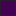

<!doctype html>
<html lang="en">
    <head>
        <meta charset="utf-8">
        <meta http-equiv="X-UA-Compatible" content="IE=edge">
        <meta name="viewport" content="initial-scale=1,user-scalable=no,maximum-scale=1,width=device-width">
        <meta name="mobile-web-app-capable" content="yes">
        <meta name="apple-mobile-web-app-capable" content="yes">
        <link rel="stylesheet" href="css/leaflet.css"><link rel="stylesheet" href="css/L.Control.Locate.min.css">
        <link rel="stylesheet" href="css/qgis2web.css"><link rel="stylesheet" href="css/fontawesome-all.min.css">
        <style>
        html, body, #map {
            width: 100%;
            height: 100%;
            padding: 0;
            margin: 0;
        }
        </style>
        <title></title>
    </head>
    <body>
        <div id="map">
        </div>
        <script src="js/qgis2web_expressions.js"></script>
        <script src="js/leaflet.js"></script><script src="js/L.Control.Locate.min.js"></script>
        <script src="js/leaflet.rotatedMarker.js"></script>
        <script src="js/leaflet.pattern.js"></script>
        <script src="js/leaflet-hash.js"></script>
        <script src="js/Autolinker.min.js"></script>
        <script src="js/rbush.min.js"></script>
        <script src="js/labelgun.min.js"></script>
        <script src="js/labels.js"></script>
        <script src="data/HexClipCountD_1.js"></script>
        <script>
        var map = L.map('map', {
            zoomControl:true, maxZoom:28, minZoom:1
        }).fitBounds([[38.37769972755034,-76.26220296823836],[38.65723474615337,-75.68106437693235]]);
        var hash = new L.Hash(map);
        map.attributionControl.setPrefix('<a href="https://github.com/tomchadwin/qgis2web" target="_blank">qgis2web</a> &middot; <a href="https://leafletjs.com" title="A JS library for interactive maps">Leaflet</a> &middot; <a href="https://qgis.org">QGIS</a>');
        var autolinker = new Autolinker({truncate: {length: 30, location: 'smart'}});
        L.control.locate({locateOptions: {maxZoom: 19}}).addTo(map);
        var bounds_group = new L.featureGroup([]);
        function setBounds() {
        }
        map.createPane('pane_CartoDark_0');
        map.getPane('pane_CartoDark_0').style.zIndex = 400;
        var layer_CartoDark_0 = L.tileLayer('http://a.basemaps.cartocdn.com/dark_all/{z}/{x}/{y}.png', {
            pane: 'pane_CartoDark_0',
            opacity: 0.8,
            attribution: '',
            minZoom: 1,
            maxZoom: 28,
            minNativeZoom: 0,
            maxNativeZoom: 22
        });
        layer_CartoDark_0;
        map.addLayer(layer_CartoDark_0);
        function pop_HexClipCountD_1(feature, layer) {
            var popupContent = '<table>\
                    <tr>\
                        <th scope="row">Total</th>\
                        <td>' + (feature.properties['Total'] !== null ? autolinker.link(feature.properties['Total'].toLocaleString()) : '') + '</td>\
                    </tr>\
                    <tr>\
                        <th scope="row">CS</th>\
                        <td>' + (feature.properties['CS'] !== null ? autolinker.link(feature.properties['CS'].toLocaleString()) : '') + '</td>\
                    </tr>\
                    <tr>\
                        <th scope="row">Super</th>\
                        <td>' + (feature.properties['Super'] !== null ? autolinker.link(feature.properties['Super'].toLocaleString()) : '') + '</td>\
                    </tr>\
                    <tr>\
                        <th scope="row">SGCS</th>\
                        <td>' + (feature.properties['SGCS'] !== null ? autolinker.link(feature.properties['SGCS'].toLocaleString()) : '') + '</td>\
                    </tr>\
                </table>';
            layer.bindPopup(popupContent, {maxHeight: 400});
        }

        function style_HexClipCountD_1_0(feature) {
            if (feature.properties['Total'] >= 0.000000 && feature.properties['Total'] <= 0.000000 ) {
                return {
                pane: 'pane_HexClipCountD_1',
                opacity: 1,
                color: 'rgba(35,35,35,0.6)',
                dashArray: '',
                lineCap: 'butt',
                lineJoin: 'miter',
                weight: 1.0, 
                fill: true,
                fillOpacity: 1,
                fillColor: 'rgba(255,249,197,0.6)',
                interactive: true,
            }
            }
            if (feature.properties['Total'] >= 0.000000 && feature.properties['Total'] <= 1.000000 ) {
                return {
                pane: 'pane_HexClipCountD_1',
                opacity: 1,
                color: 'rgba(35,35,35,0.6)',
                dashArray: '',
                lineCap: 'butt',
                lineJoin: 'miter',
                weight: 1.0, 
                fill: true,
                fillOpacity: 1,
                fillColor: 'rgba(93,201,98,0.6)',
                interactive: true,
            }
            }
            if (feature.properties['Total'] >= 1.000000 && feature.properties['Total'] <= 3.000000 ) {
                return {
                pane: 'pane_HexClipCountD_1',
                opacity: 1,
                color: 'rgba(35,35,35,0.6)',
                dashArray: '',
                lineCap: 'butt',
                lineJoin: 'miter',
                weight: 1.0, 
                fill: true,
                fillOpacity: 1,
                fillColor: 'rgba(32,144,141,0.6)',
                interactive: true,
            }
            }
            if (feature.properties['Total'] >= 3.000000 && feature.properties['Total'] <= 5.000000 ) {
                return {
                pane: 'pane_HexClipCountD_1',
                opacity: 1,
                color: 'rgba(35,35,35,0.6)',
                dashArray: '',
                lineCap: 'butt',
                lineJoin: 'miter',
                weight: 1.0, 
                fill: true,
                fillOpacity: 1,
                fillColor: 'rgba(58,82,139,0.6)',
                interactive: true,
            }
            }
            if (feature.properties['Total'] >= 5.000000 && feature.properties['Total'] <= 7.000000 ) {
                return {
                pane: 'pane_HexClipCountD_1',
                opacity: 1,
                color: 'rgba(35,35,35,0.6)',
                dashArray: '',
                lineCap: 'butt',
                lineJoin: 'miter',
                weight: 1.0, 
                fill: true,
                fillOpacity: 1,
                fillColor: 'rgba(68,1,84,0.6)',
                interactive: true,
            }
            }
        }
        map.createPane('pane_HexClipCountD_1');
        map.getPane('pane_HexClipCountD_1').style.zIndex = 401;
        map.getPane('pane_HexClipCountD_1').style['mix-blend-mode'] = 'normal';
        var layer_HexClipCountD_1 = new L.geoJson(json_HexClipCountD_1, {
            attribution: '',
            interactive: true,
            dataVar: 'json_HexClipCountD_1',
            layerName: 'layer_HexClipCountD_1',
            pane: 'pane_HexClipCountD_1',
            onEachFeature: pop_HexClipCountD_1,
            style: style_HexClipCountD_1_0,
        });
        bounds_group.addLayer(layer_HexClipCountD_1);
        map.addLayer(layer_HexClipCountD_1);
            var abstract = new L.Control({'position':'bottomleft'});
            abstract.onAdd = function (map) {
                this._div = L.DomUtil.create('div',
                'leaflet-control leaflet-bar abstract');
                this._div.id = 'abstract'
                    this._div.setAttribute("onmouseenter", "abstract.show()");
                    this._div.setAttribute("onmouseleave", "abstract.hide()");
                    this.hide();
                    return this._div;
                };
                abstract.hide = function () {
                    this._div.classList.remove("abstractUncollapsed");
                    this._div.classList.add("abstract");
                    this._div.innerHTML = 'i'
                }
                abstract.show = function () {
                    this._div.classList.remove("abstract");
                    this._div.classList.add("abstractUncollapsed");
                    this._div.innerHTML = 'This map depicts Dorchester County, Maryland. The data is showing the distribution of grocery/food stores around the county via hexagons. each hexagon represents 1.3 square miles. There are 36 food stores in the county and each hexagon has data for the number of stores from each main category there are in each hexagon. <br />Key: Dorchester<br />Super - Supermarkets (4)<br />SGCS - Small Grocery or Corner Store (24)<br />Con - Convenience Store (8)<br />PM - Public Market (0)';
            };
            abstract.addTo(map);
        var baseMaps = {};
        L.control.layers(baseMaps,{'HexClipCountD<br /><table><tr><td style="text-align: center;"></td><td>0 - 0</td></tr><tr><td style="text-align: center;"></td><td>0 - 1</td></tr><tr><td style="text-align: center;"></td><td>1 - 3</td></tr><tr><td style="text-align: center;"></td><td>3 - 5</td></tr><tr><td style="text-align: center;"></td><td>5 - 7</td></tr></table>': layer_HexClipCountD_1,"Carto Dark": layer_CartoDark_0,}).addTo(map);
        setBounds();
        </script>
    </body>
</html>
